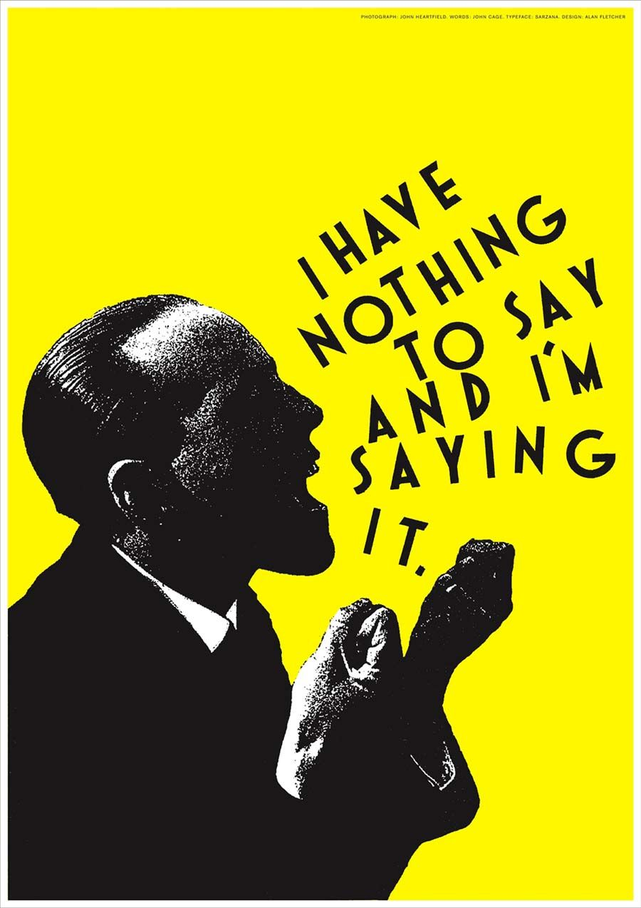

1. Michael Bierut

“NOTHING I’VE DONE SINCE HAS SEEMED AS DIFFICULT.”
Michael Bierut is a partner in the New York office of Pentagram, a founder of Design Observer and a teacher at Yale School of Art and Yale School of Management. He is often credited with “democratizing design”, thanks to his unique and ubiquitous approach to graphic design. Bierut paved the way for ‘accessible’ design whereby complex content was made more easy and enticing to read and consume through a sharp, direct design.
2.Milton Glaser
“You want to move the viewer in a perception so that when they first look at the design. They get the idea, because that act between seeing and understanding is critical.”
Creator of the iconic I ♥ NY branding, logos for Target and JetBlue, the opening title sequence to Mad Men, and poster designs for musician Bob Dylan, Milton Glaser has transformed what it means to create a powerful, timeless design. Especially, His best known I ♥ NY project expressed his pride for the city and soon became a universally recognised symbol. Over his career, Glaser personally designed and illustrated more than 400 posters. His artwork has been featured in exhibits, and placed in permanent collections in many museums worldwide.
3.Alan Fletcher

“If your mind is too open people can throw all kinds of rubbish into it.”
Synthesising the graphic traditions of Europe and North America to develop a spirited, witty and very personal visual style, Alan Fletcher is among the most influential figures in British graphic design as a founder of Fletcher/Forbes/Gill in the 1960s and Pentagram in the 1970s.His expressive typography, bold colors and strong visual language helped pave the way for graphic design to be thought of as a key and crucial element to businesses, not just an optional decorative extra.
4.Cipe Pineles
"We tried to make the prosaic attractive without using the tired clichés of false glamour. You might say we tried to convey the attractiveness of reality, as opposed to the glitter of a never-never land."
Cipe Pineles was one of the most prominent designers of the twentieth century and one of the first female art directors to work at a major magazine. She served in that capacity at Glamour, Seventeen, and Charm. Her career was also full of a lot of firsts; She was the first female designer to become a member of the Art Directors Club in New York, the first autonomous female art director for a magazine. She was also the first designer to hire fine artists to illustrate mass market publications which began a long standing trend within magazine design that would go on to shape the magazine design industry.
5.Armin Hofmann


"For after all, a poster does more than simply supply information on the goods it advertises; it also reveals a society’s state of mind."
By the age of 27 Armin Hofmann had already completed an apprenticeship in lithography and had begun teaching typography at the Basel School of Design. His colleagues and students were integral in adding to work and theories that surrounded the Swiss International Style, which stressed a belief in an absolute and universal style of graphic design. The style of design they created had a goal of communication above all else, practiced new techniques of photo-typesetting, photo-montage and experimental composition and heavily favored sans-serif typography. Just as Emil Ruder and Joseph Müller-Brockmann did, Hofmann wrote a book outlining his philosophies and practices. His Graphic Design Manual was, and still is, a reference book for all graphic designers.
6.Alexey Brodovitch
"If you know yourself, you are doomed."
Alexey Brodovitch is known foremost for his work on the american fashion-magazine Harper's bazaar. He was the first art director to integrate image and text. Most american magazines at that time used text and illustration seperately, dividing them by wide white margins. The typeface he preferred was Bodoni, but when needed he switched to Stencil, Typewriter or a script. He matched the typeface with the feeling or with the need for an appropiate effect. Legibility was not his primary concern. His layouts are easily recognized by his generous use of white space. Colleagues at other magazines saw his sparse designs as truly elegant, but a waste of valuable space.